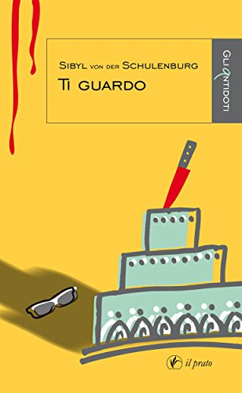

1) Nel suo libro affronta tematiche prettamente psicologiche e attuali come lo stalking ma anche forse poco conosciute come l’erotomania e l’oculofilia. Come mai ha scelto di trattare questi argomenti?
Sono argomenti spesso trattati da giornalisti e scrittori in maniera sensazionalistica e superficiale, senza una spiegazione che sia comprensibile al grande pubblico. Per contro, c’è un forte interesse della gente per i motivi psicologici sottostanti le azioni criminose più famose del nostro tempo. Il sensazionalismo aiuta a catturare l’interesse del lettore ma poi, a mio parere, è utile offrire anche qualche spiegazione di questi fenomeni, informazioni precise date con un linguaggio divulgativo, senza cadere nel tecnicismo. E’ quello che tento di fare affrontando, con la narrazione, temi psicologici complessi.
2) Il suo interesse per la psicologia non traspare solo dalle pagine di Ti guardo ma anche da altre sue pubblicazioni e dalla sua laurea in Scienze e tecniche psicologiche, come si è avvicinata a questa disciplina?
Avevo letto Freud, in tedesco ovviamente, e l’avevo detestato da subito. Poi, sempre in tedesco, hoiniziato a leggere opere sulle menzogne di Freud, la sua dipendenza dalla cocaina e i suoi fallimenti nascosti. Ho parlato con psicologi d’indirizzo freudiano e psicoanalisti, così come ho parlato con comportamentisti americani, e alla fine ho deciso di volerne sapere di più. Sicché, dopo una vita da giurista d’impresa, ho deciso per una seconda laurea a indirizzo psicologico. Ho avuto la fortuna di scoprire le neuroscienze e un mondo di metodologie terapeutiche diverse da quel divanetto sul quale – spesso– il paziente torna per tutta la vita, con costi e risultati ben raccontati da Woody Allen.
3) Il genere dei suoi racconti è stato definito Psicoromanzo noir, da cosa deriva la scelta di affiancare le tematiche psicologiche al genere noir?
Direi che si affiancano da soli, basta studiarsi alcuni casi clinici e, nell’immaginario collettivo la follia si lega sempre a paura e violenza. Nei miei romanzi delineo disturbi di personalità, o patologie, raccontandone i sintomi in maniera precisa, là dove un altro scrittore avrebbe forse solo usato l’etichetta diagnostica. Il disturbo psichico conduce poi spesso a disturbi della sfera sessuale, ecco che la parafilia entra necessariamente nel quadro. Ogni mio psicoromanzo affronta un disturbo, una terapia e un percorso diversi. In Ti guardo il disturbo è l’erotomania (etichetta diagnostica) che spesso sfocia nello stalking e l’oculolinctus è la parafilia (non l’unica) del personaggio principale che, attraverso l’occhio, non solo guarda, ma scava anche nella psiche dell’altro. È un’espressione del tanto diffuso bisogno di essere visti e non solo guardati.
4) La sua prosa è veloce, incalzante, si sofferma più sui dialoghi e sui profili dei vari personaggi piuttosto che sulle descrizioni dei luoghi e delle varie ambientazioni, come mai questa scelta?
Nei miei noir uso la scrittura icastica, una prosa che ambisce a far nascere immagini immediate nel lettore. Per questo scrivo rigorosamente in terza persona, evito i verbi mentalistici nella voce narrante e lascio che i personaggi si raccontino da soli, con i dialoghi e le azioni. La mia voce narrante è l’occhio della telecamera e racconta i fatti, non le emozioni né i pensieri del personaggio. La telecamera non dice se il personaggio è triste, arrabbiato o felice: il lettore lo capirà perché ci saranno lacrime, pugni sul tavolo oppure ampi sorrisi. In alternativa sarà il personaggio, nei dialoghi, a raccontare se stesso o altri personaggi.
Questo tipo di scrittura sortisce grandi effetti sulla mente televisiva del lettore moderno. Il rovescio della medaglia consiste in romanzi ridotti di almeno il 50% poiché si tagliano avverbi e aggettivi dove possibile, si evitano ripetizioni e si forniscono dettagli precisi in maniera sintetica, senza riempitivi inutili.
Inoltre scrivo per scene, come se si trattasse di un’opera teatrale: delineo il palco con il suo fondale e le sue quinte, poi metto in scena i personaggi . Spesso faccio intervenire la natura o ambientazioni cariche di simbolismi come nella tradizione del naturalismo. È chiaro che gli strumenti di interpretazione di simboli e figure retoriche li porta il lettore ed è per questo che i miei romanzi sono godibili soprattutto da lettori occidentali.
L’anno scorso è stato pubblicato lo studio di un ricercatore americano che dimostra l’effetto di una scrittura di questo tipo sul cervello del lettore. Oggigiorno con l’Imaging a risonanza magnetica è possibile documentare ciò di cui Freud neppure poteva sognare.
5) Leggendo il suo romanzo Ti guardo ho pensato che mi sarebbe piaciuto vederne la trasposizione al cinema, ha mai pensato a questa possibilità?
Me lo dicono quasi tutti i lettori ed è segno che il tipo di scrittura ha funzionato e il lettore ha già in mente il suo film. In effetti, per i motivi sopra delineati, la trasposizione cinematografica di un mio psicoromanzo sarebbe semplicissima.
6) Che progetti ha in futuro? Pensa di continuare sulla scia dello psicoromanzo o ha altri interessi?
Il genere che mi ha portato maggiori riconoscimenti, in termini di premi letterari, è il romanzo storico. Ho in lavorazione la terza opera che concluderà una sorta di trilogia in quanto relativo a tre personaggi famosi della mia famiglia: Werner, Johann Matthias e Melusine. Il primo è mio padre, letterato antinazista (“Il Barone”, 2010 Ipertesto Edizioni); il secondo è il feldmaresciallo della Serenissima Repubblica di Venezia che salvò l’Italia e l’Europa dall’invasione dei turchi nel 1716 (“Per Cristo e Venezia”, 2015 Il Prato Publishing House di Padova, pubblicato anche in tedesco e greco moderno); ora lavoro su Melusine, sorella di Johann Matthias, che è stata l’amante di una vita di Giorgio I d’Inghilterra.
Entrambi i generi richiedono studio e ricerche ma il noir è certamente meno impegnativo per me. Ho in vista di pubblicare presto uno psicoromanzo che svolge tra Milano e Taormina, con al centro conflitti linguistici e culturali che portano a conflitti della psiche. Nel 2017 saranno pubblicate anche le mie opere noir in tedesco.
7) Quali autori l’hanno avvicinata al mondo della scrittura e quali la ispirano tutt’oggi?
Sono figlia di due scrittori. Mio padre era anche un ottimo commediografo e, tutt’oggi, va in onda un film scaturito da una sua commedia. Forse ho preso qualcosa da lui, anche perché è stato uno dei primi autori di cui ho letto l’intera produzione. Mia madre scriveva in uno stile più moderno ed efficace, con particolare attenzione alla psicologia dei personaggi, e probabilmente anche lei ha influenzato la mia scrittura. Sono cresciuta in mezzo a migliaia di libri e ho letto di tutto, in tedesco, inglese, italiano e francese; ho amato Flaubert, Heine, Mann, Dostoevskij, Kafka, e tanti altri di cui non ricordo né titoli né nomi, senza sentirmi però particolarmente ispirata dall’uno o dall’altro autore. In lingua italiana ho apprezzato Verga e Sciascia, soprattutto per gli stili. Amo l’azione esplicativa più che le lunghe disquisizioni su problemi esistenziali: la creatività è un “fare” da cui scaturiscono emozioni e quindi apprendimento, non è un solo “dire” che porta a stati ipnotici e al sonno.
8) Conosce romanzi nordici e in particolar modo thriller? Apprezza qualche autore?
Ho provato con qualche titolo, a partire da L’uccello del malaugurio di Camilla Läckberg, ma non è lo stile che prediligo. Bisogna sempre tener presente che il pensiero è condizionato dal linguaggio e dalla cultura; tutto il simbolismo, le figure retoriche, il non-esplicito in genere, fa riferimento a una certa cultura e temo di non riuscire a cogliere il non-detto scandinavo, tanto più che può aver subito modifiche nella traduzione. Ho letto tantissimo Agatha Christie e poi, crescendo, è stata accantonata a favore di autori americani. Questo passaggio è stato favorito dai miei viaggi in USA e dalla conoscenza della loro cultura.
Oggi leggo molta saggistica, sia di carattere storico che psicologico, inoltre valuto manoscritti di autori che vogliono essere pubblicati in una delle collane di narrativa dell’editore “Il Prato Publishing House”. Con passione mi occupo anche di scrittura in carcere, avendo fondato premi letterari riservati a detenuti con sentenza definitiva attraverso i progetti dell’Associazione Artisti Dentro Onlus.
Sibyl von der Schulenburg
Intervista a cura di Leonardo Di Lascia
Di Sibyl von der Schulenburg su Thrillernord:
 IL LIBRO - Un’ombra spia Valentina, che lavora la pasta di zucchero nel laboratorio con le grandi vetrate. L’ombra trema, soffre, ama e parteggia per la bella cake designer; il freddo di fine anno non impedisce gli appostamenti al buio per vedere l’oggetto del suo amore. Poi improvvisamente tutto cambia: l’amore diventa disprezzo e l’ammirazione silenziosa esplode in azioni violente.
Negli ultimi mesi dell’anno, la vita di Sofia ha preso una piega nuova e definitiva. L’amore per Valentina, la bella cake designer, svanisce e si trasforma in disprezzo che Sofia esprime con atti di stalking. Le varie identità che hanno caratterizzato la sua vita tendono a ridursi a una sola, quella che piace al dottor Zuccala, lo psicologo che ha detto di volerle bene